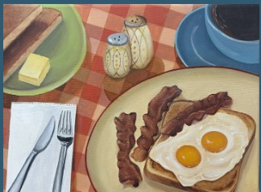
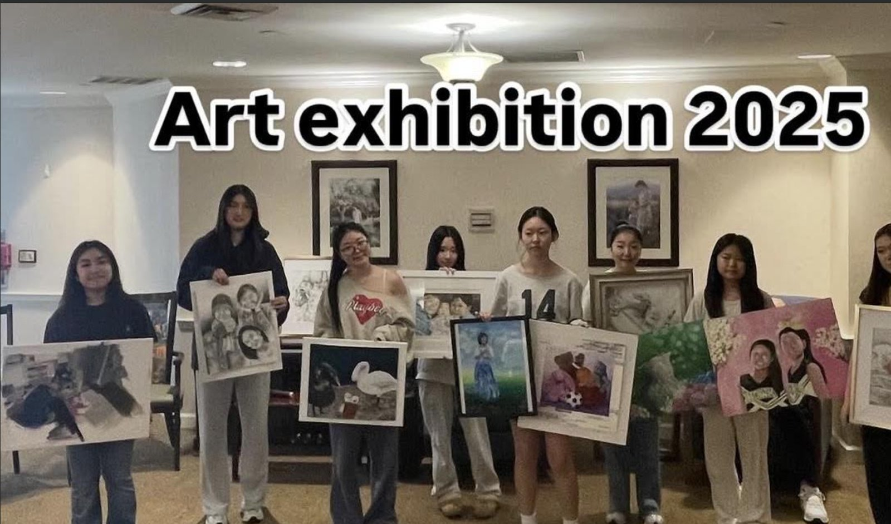
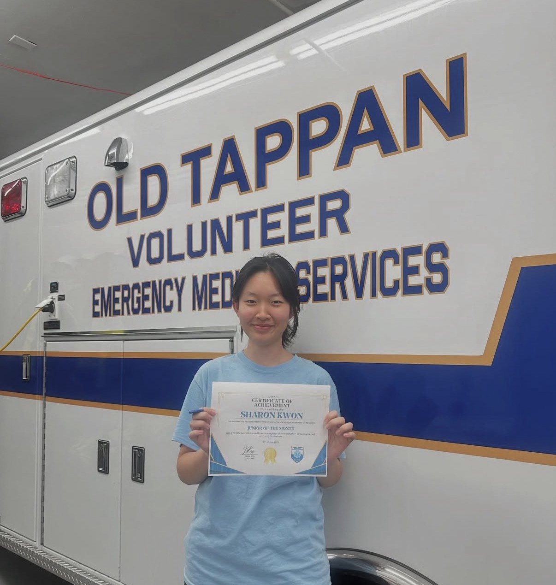
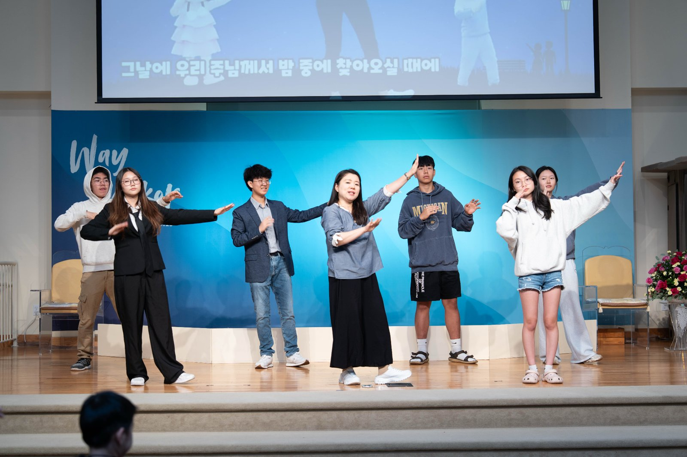
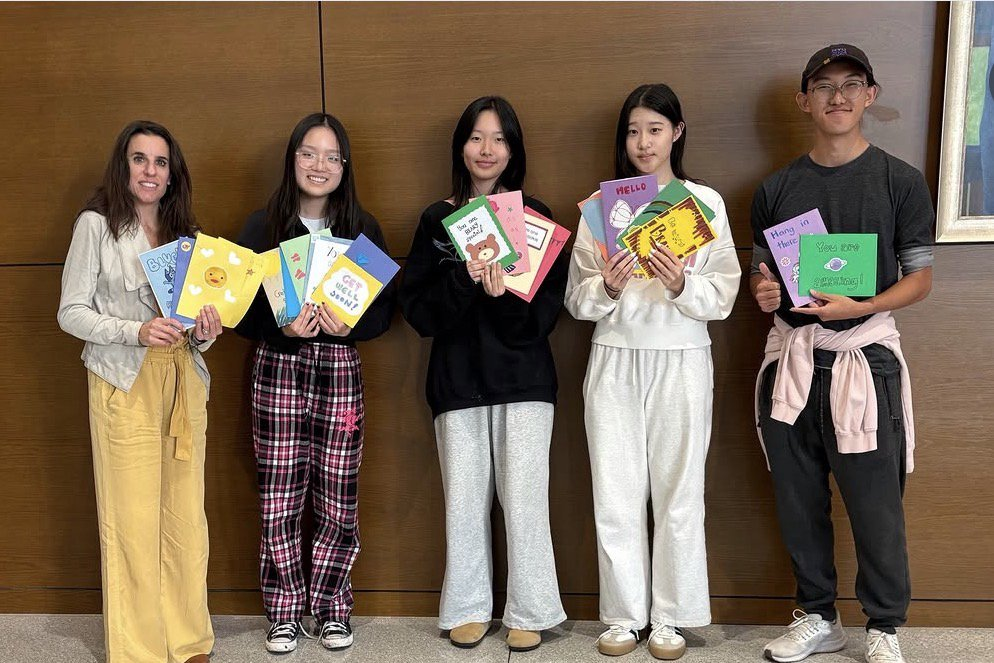
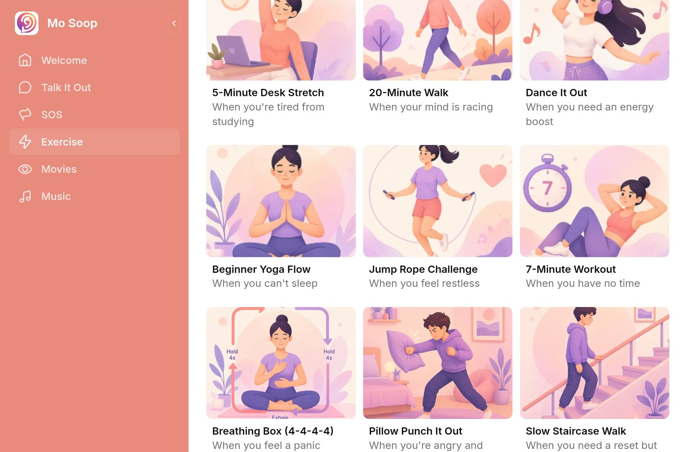
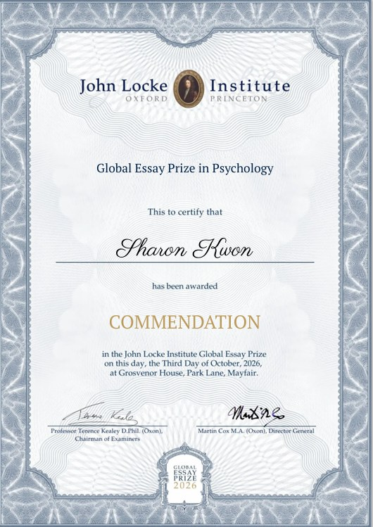
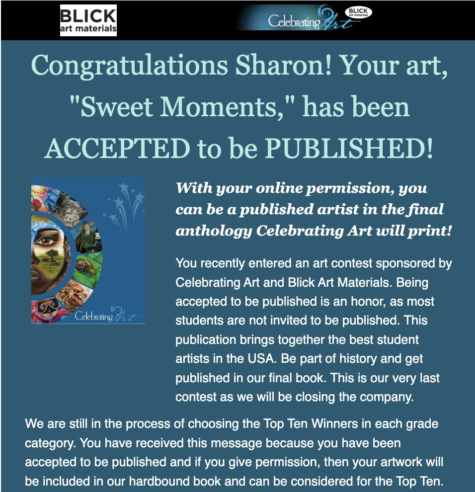
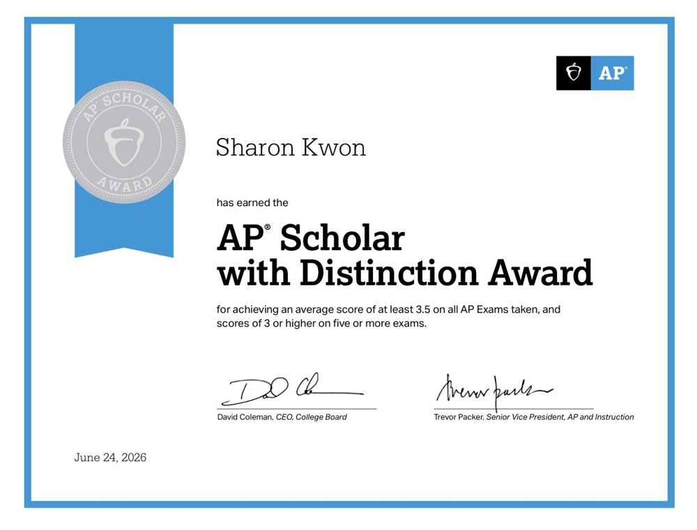
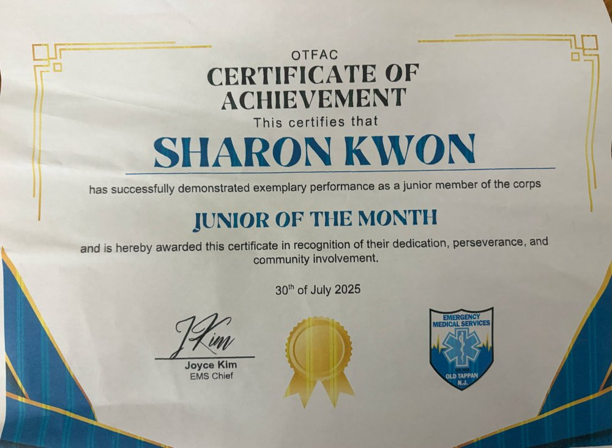

About
Three threads run through this page: illustration, writing, and direct work with people in distress.
I am a senior at Northern Valley Regional High School at Old Tappan. This year I am taking AP Research, AP Biology, AP Literature, and AP Calculus, after AP Chemistry, AP Physics 1, AP Language, AP World History, and AP Precalculus as a junior. The College Board named me an AP Scholar with Distinction in 2026, I scored a 1500 on the SAT, with an 800 in Math, and I was named a Commended Student in the 2027 National Merit Scholarship Program.
Outside class I illustrate children’s books that explain the science of emotions, I write essays about how culture shapes the way we see ourselves, and for two years I worked shifts as a junior member of the Old Tappan Emergency Medical Services. I want to study psychology, and eventually to work with children and teenagers in clinical settings.
Illustration and art
Illustration for children’s books, juried exhibitions, and a monthly art program for preschoolers.
Mia’s Feelings Lab, illustrator
2026, with author Kayla Park · two books so far, ages 7 to 13
Each book pairs a story with a hands-on activity. In Book 1, Why Do I Get So Angry?, Mia learns that a small part of the brain works like a smoke detector. In Book 2, Why Am I Shy Around New People?, she finds her way back to the cafeteria one small step at a time. I drew Mia, her neighbor Dr. Reena, and every scene, keeping the pictures clear enough that a seven-year-old can read the feeling on Mia’s face before reading the words.
Healing Through the Arts, Community Award
June 2026 · Hope & Healing Juried Art Show, Allentown Art Museum community gallery
My piece was selected for the juried show and displayed from June 11 to August 9, 2026. Art from the show is placed in hospitals, clinics, mental health facilities, and hospices.
AIM Design Challenge, Honorable Mention
2026 · 9th annual challenge for youth mental health awareness
Art Club president
Officer in 2025–26, president in 2026–27 · membership grew from 107 to 165
Every month the club runs an art lesson for the preschoolers who attend school in our building. I plan the materials, lead activities in front of the class, and direct the other members. At school events I paint faces at Trunk or Treat and run the sign-up booth at the club fair.
Celebrating Art, published
Two works selected for the national student anthology


Writing and psychology
Critical essays on how culture shapes the mind. Both pieces entered in 2026 were recognized, one of them internationally.
John Locke Institute Global Essay Prize, Commendation
2026 · Psychology category · awarded October 3, 2026, at Grosvenor House, London
My essay was shortlisted in the Psychology category of an international competition that draws thousands of entries each year, and at the awards ceremony it received a Commendation.
Scholastic Art & Writing Awards
2026 · Silver Key, Critical Essay · Honorable Mention, Flash Fiction
The Silver Key essay, “When Beauty Becomes a Brand: The Dangerous Influence of K-pop Aesthetics,” looks at how an industry’s idea of beauty becomes a standard that teenagers measure themselves against. The flash fiction piece is called “The Last Day.”
AP Research
2026–27 · year-long independent study
I am studying how short cooking tutorials on YouTube teach, and what prior research on instructional video says about why some of them work. The project ends with a paper and a presentation in spring 2027.
Emergency medical services
Two years as a junior member of Old Tappan Volunteer Emergency Medical Services, at least six hours a week.
2024 to 2026 · selected by application and interview · Junior of the Month, July 2025
Before every shift I checked the rig. On calls I gathered the patient’s information, assisted the crew chief, and did what the patient needed within what I was allowed to do. On the way in, I called the hospital to tell them who we were bringing. Many of those nights were trainings, meetings, and rig checks on top of the shift itself.
This is where my interest in psychology stopped being a subject and became a question. Most of the people we picked up were frightened, and the thing that helped most was often not medical.

Teaching and community
Three years of weekly Korean-language teaching, plus library art classes and veterans’ commemorations.
Korean school, teaching assistant
2023 to 2026 · three hours every week
I help a class of about six children with reading, writing, speaking, and listening, using workbook practice. Before class I lead the movement and worship warm-up, and after class I help with the art and cooking electives.
Teens for Arts
2025–26 · two hours a week
I designed the posters for the weekend art classes at local libraries, taught at the classes, and helped make more than 120 cards for hospital patients.


Honoring Korean War veterans
July 2025 and July 2026
I performed in an Evening of Music for Korean War veterans (New Jersey Senate citation, 2025) and volunteered at the 76th anniversary commemoration of the Korean War Armistice (Bergen County Clerk recognition, 2026).
Leadership
Wellness content for a peer-support app, media for a student leadership forum, and volunteer work for a human rights organization.
VOY (Voices of the Young), Wellness Content Lead
2024 to 2027, grades 10 to 12
Mo Soop (모두의 대나무 숲) is VOY’s anonymous peer-support app, “a safe space to share and heal.” I built its Exercise section: nine ways to settle your body when a feeling gets too big, each matched to a moment. Box breathing for when you feel a panic coming, a slow staircase walk for when you need a reset, a pillow to punch for when you are angry, a 20-minute walk for when your mind is racing. To write it, I studied Psychological First Aid, the method first responders use to steady people right after something frightening happens, and turned what I learned into steps a teenager can follow alone on a phone. I also draw the illustrated posts for VOY’s Instagram that introduce the app and share the same techniques.
Open Mo Soop
YGLE (Young Global Leaders of the East), Director of Media
2024 to 2027, grades 10 to 12
I handle press releases and local media coverage for the annual Global Leadership Forum.
LiNK North Jersey Rescue Team, volunteer
2024 to 2027, grades 10 to 12
I help at awareness events and fundraisers organized with Liberty in North Korea.
Honors
- John Locke Institute Global Essay Prize, Commendation in Psychology, 2026
- Scholastic Art & Writing Awards, Silver Key (critical essay) and Honorable Mention (flash fiction), 2026
- Healing Through the Arts Community Award, Hope & Healing Juried Art Show, 2026
- AIM Design Challenge, Honorable Mention, 2026
- National Merit Scholarship Program, Commended Student, 2027 program (PSAT/NMSQT Selection Index 208)
- AP Scholar with Distinction, 2026
- College Board National Recognition Program, School Recognition Award, 2026
- National Honor Society, inducted December 2025
- Old Tappan EMS, Junior of the Month, July 2025
- New Jersey Senate Citation, Evening of Music for Korean War veterans, 2025
- Bergen County Clerk Certificate of Recognition, Korean War Armistice commemoration, 2026
- Helper Helper International Service Honor, Gold, 2025
- Celebrating Art, two works selected for publication

John Locke Commendation 
Scholastic Silver Key 
AP Scholar with Distinction 
EMS Junior of the Month
Contact
- sharonkwon020609@gmail.com
- Location
- Bergen County, New Jersey
- Mo Soop
- mo-soop.glide.page
- Mia’s Feelings Lab
- Amazon listing to be added at release.